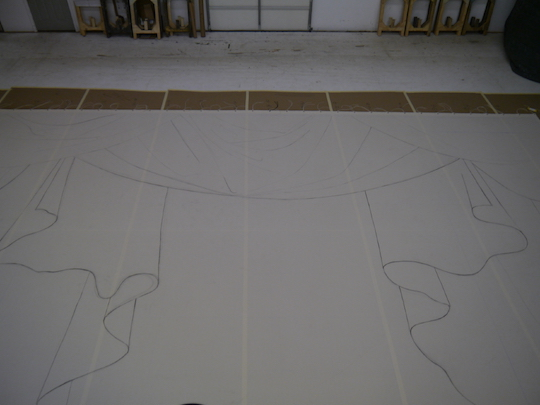
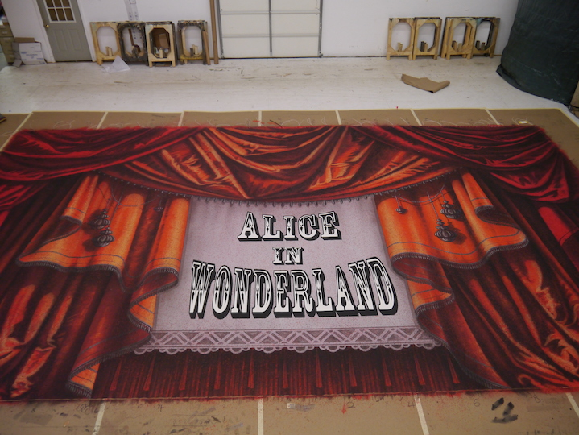
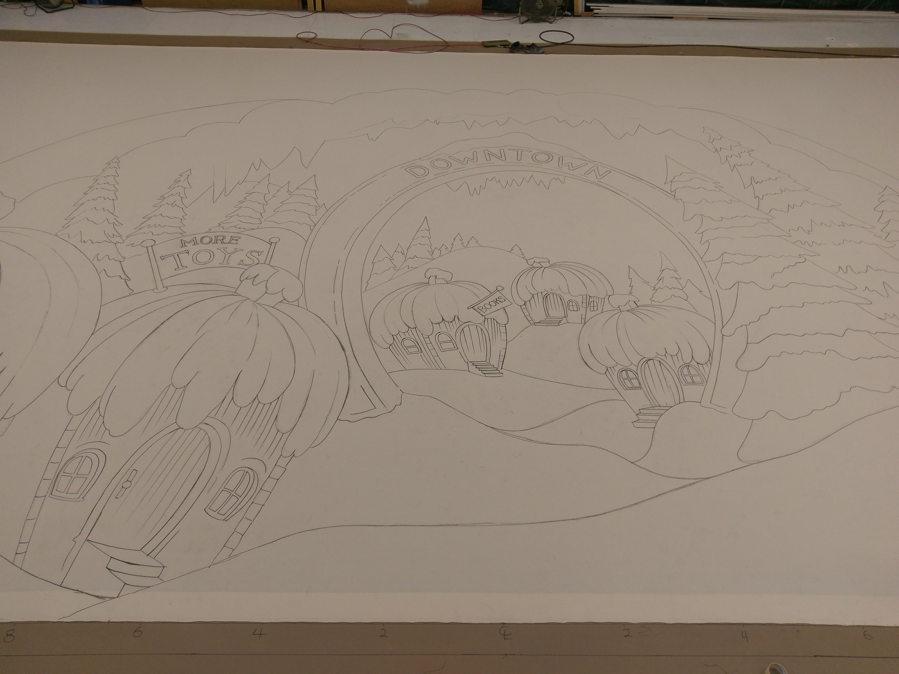
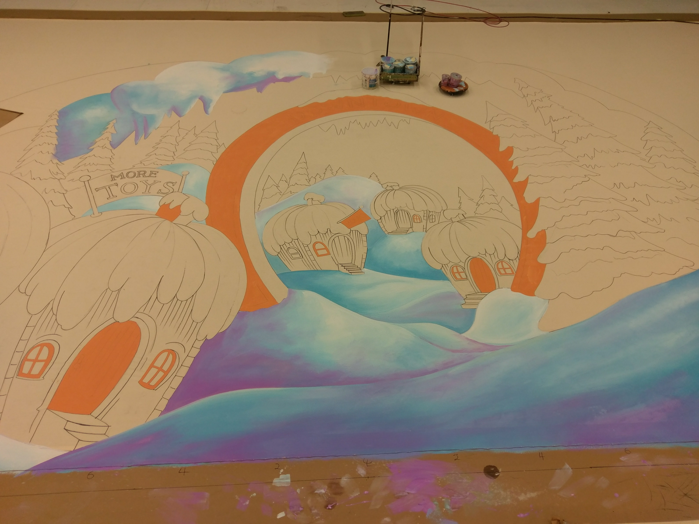

DROPS
Alice in Wonderland (2013)
Adapted by Sharon Holland
Directed by Peter C. Brosius
Design: G.W. Mercier
Paint: Mary Novodvorsky and Peter Baker
Children's Theatre Company



The Grinch (2018)
Written by Timothy Mason
Directed by Peter C. Brosius
Design: Tom Butsch
Paint: Mary Novodvorsky and Peter Baker
Children's Theatre Company

